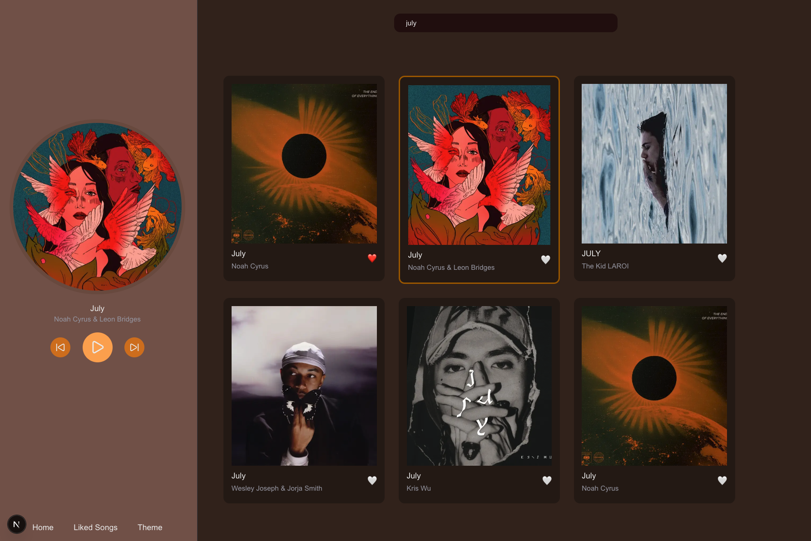
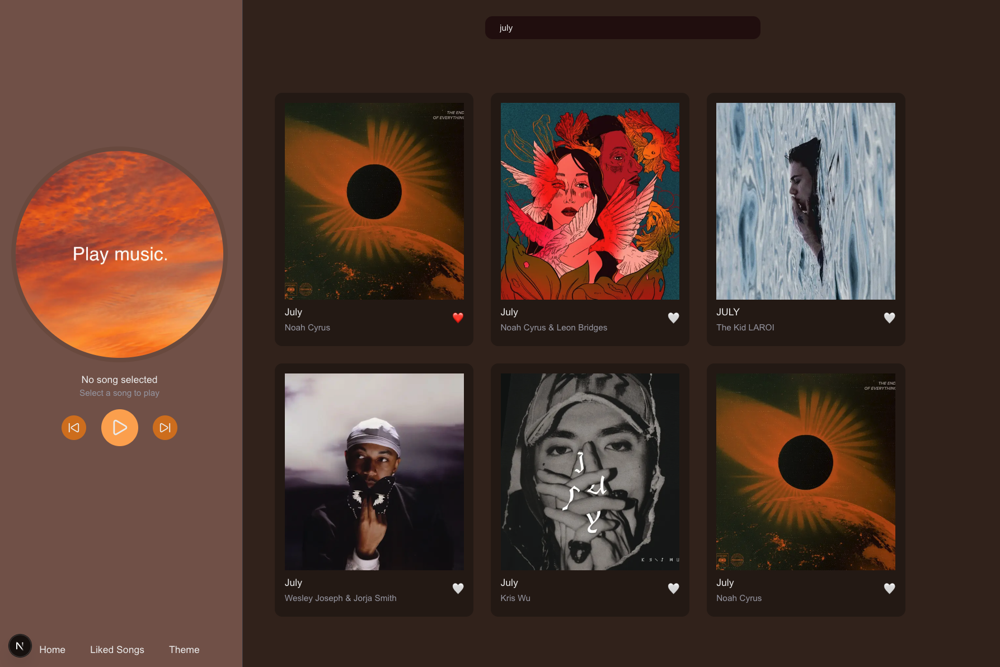
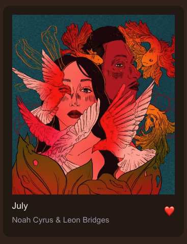

Music Player
← BackGithub: https://github.com/malinanita/music-player
Technologies: Next.js, React, TypeScript, Tailwind CSS, iTunes API
Project Description:
A music player web app built with Next.js, where users can search for songs through the iTunes Search API and play 30-second audio previews. The app fetches song data based on URL search parameters and maps the external API response into an internal song model used throughout the interface. The currently selected song is shown in a persistent player panel, and the active song is visually highlighted in the song grid. Playback state is handled in React, allowing the play button to update depending on whether a song is currently playing or paused. The project also includes a like feature, where users can save songs to a “Liked Songs” page using a server-side in-memory store. This part is still under development, with further improvements planned for playback from the liked songs page, layout refinements and clear feedback on which page is active. Additionally, a feature for theme customization will be implemented. This project has helped me strengthen my skills in Next.js, React state management, working with external APIs, TypeScript models, component-based architecture, and creating interactive user interfaces.
Project Images
Playback & Song Selection:

Browse & Discover

Like-function:
